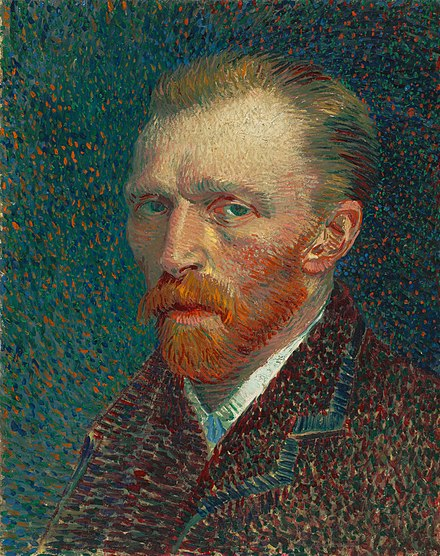

"Vincent Van Gogh"

Vincent Van Gogh, 1853 - 1890
The Starry Night(1889)
Sunflowers(1888)
Irises(1889)
Wheatfield with Crows(1890)
Self-Portrait with Bandaged Ear(1889)
1853 - 1879
Born in the Netherlands in 1853, Van Gogh started working with his uncle who
ran an influential gallery in the Netherlands at the age of 16.
acquired knowledge about However, he was fired due to incompetence in customer management,
and after time passed, he said that he wanted to make up for himself and started the pastoral path like his father.
choose After failing the pastoral exam, his father gave him a job as a priest's assistant in a small Belgian village, but here, too, Van Gogh
is shunned.
Van Gogh, who was in despair after such a difficult youth,
came to visit his younger brother Theo, who, unlike himself, was working successfully under his uncle.
He gave advice on the path of an artist, which became the starting point for the artist Van Gogh.
1880 - 1887
On the advice of his brother, Van Gogh painted by himself and his first masterpiece, The Potato Eaters.
However, during this period, Van Gogh continued to express his opposition to the church, which adversely affected family relationships,
including his father, who was a pastor. After his father's sudden death, his family criticized Van Gogh, and Van Gogh was shocked and moved to Paris,
where his younger brother Theo resided.
During a year in Paris, Van Gogh was shocked by Japanese paintings at an exhibition of Japanese paintings in the summer.
And as if following this, his work becomes brighter in color and has a Japanese feel.
1888 - 1889
After arriving in Arles, southern France, Van Gogh developed his own style while studying Dutch and Parisian and Japanese styles.
At this time, 'Yellow House' sets up an atelier and invites painters in the vicinity, but only 'Gauguin' responds to this invitation and moves to Arles.
Van Gogh was good at first, but then mentally exhausted from competition and strife. He is admitted to a mental hospital. After a few weeks,
he returns to the Yellow House, but under pressure from his neighbors, he is eventually admitted to a mental hospital in Saint-Remy.
Copyright2022. baeseongjin All rights reserved.